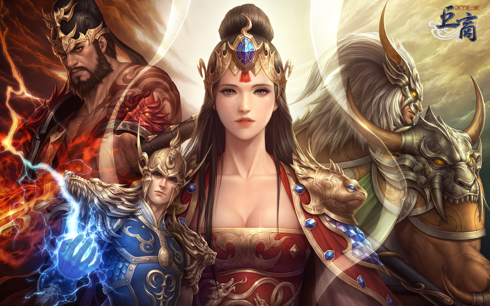
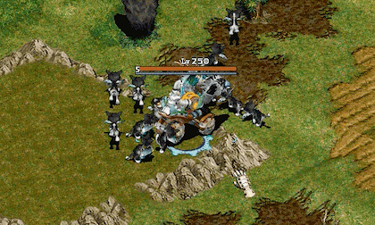
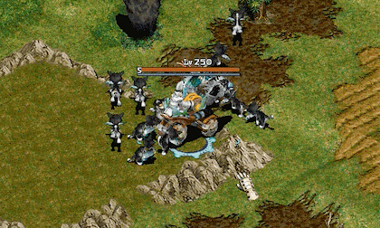

거상 특징
01. 거래를 통해 부를 축적하자!
거상의 거래에는 두 종류가 있습니다. 하나는 일대일 거래,
다른 하나는 좌판을 통한 거래입니다. 기본적인 일대일 거래는
신용도가 6 이상이어야 가능합니다. 거래창을 통해 용병, 아이템,
돈, 생산시설을 거래 하는 것이며 결정, 승인의 두 단계를 모두
거쳐야만 최종적으로 거래가 완료됩니다.
좌판은 저잣거리나 특수지형에서만 개설 할 수 있으며, 신용등급이
20이상인 캐릭터가 단축키 Ctrl + y를 눌러 개설할 수 있습니다.
좌판을 통해서는 용병과 아이템만을 판매할 수 있으며 가격과
상세설명을 적을 수 있습니다.
02. 교역에 참여하고 거상에 도전~!
각 마을에는 싸전, 시전, 무기점, 약방 4가지 중 한가지 상점이 반드시 존재합니다.
이들 상점에서 판매하는 아이템은 같은 종류의 아이템이어도 마을마다 가격이 다릅니다. 이러 한
마을간의 시세 차이를 통해 이윤을 남기는 교역에 참여하고 거상에 도전해 보세요~!!
거상의 다양한 스킬들

 
